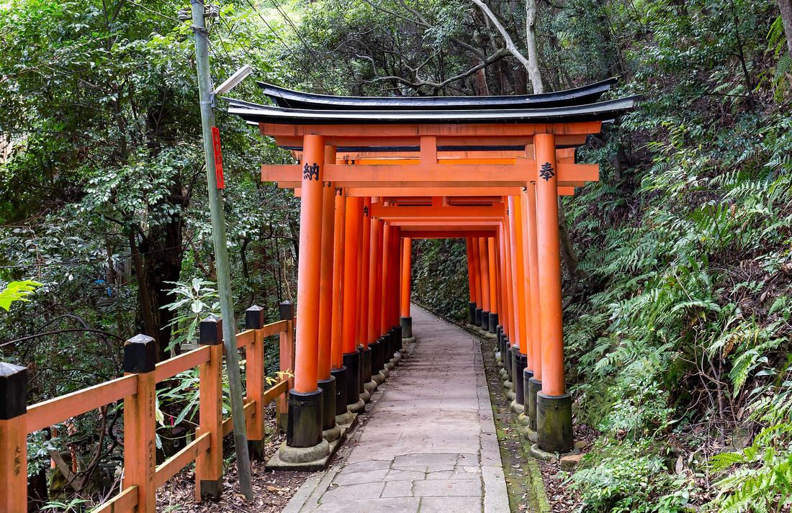
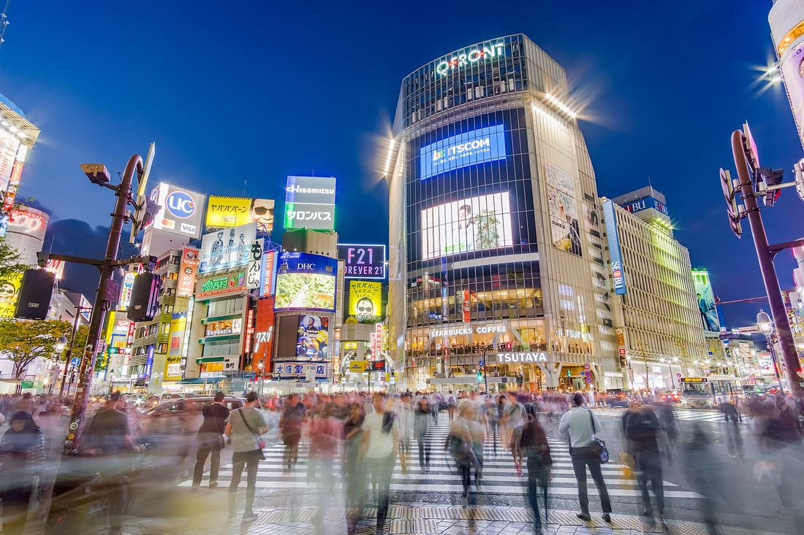
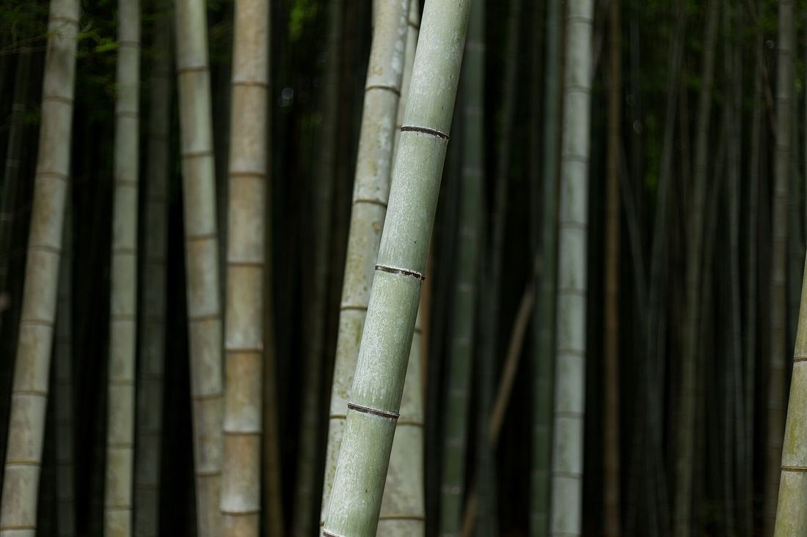
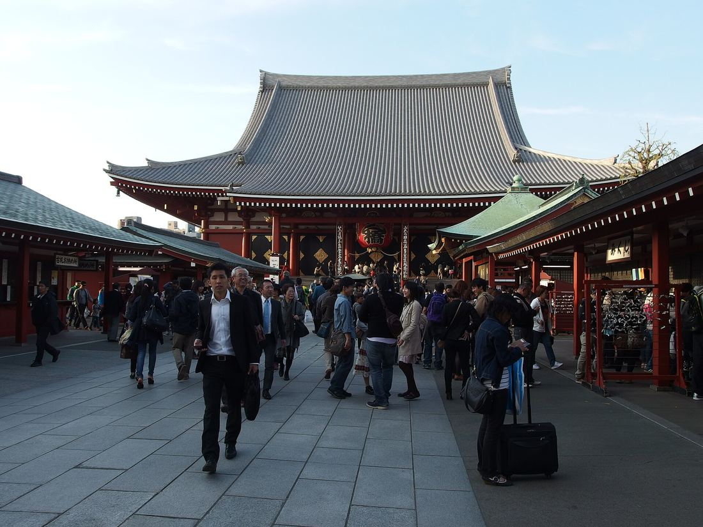
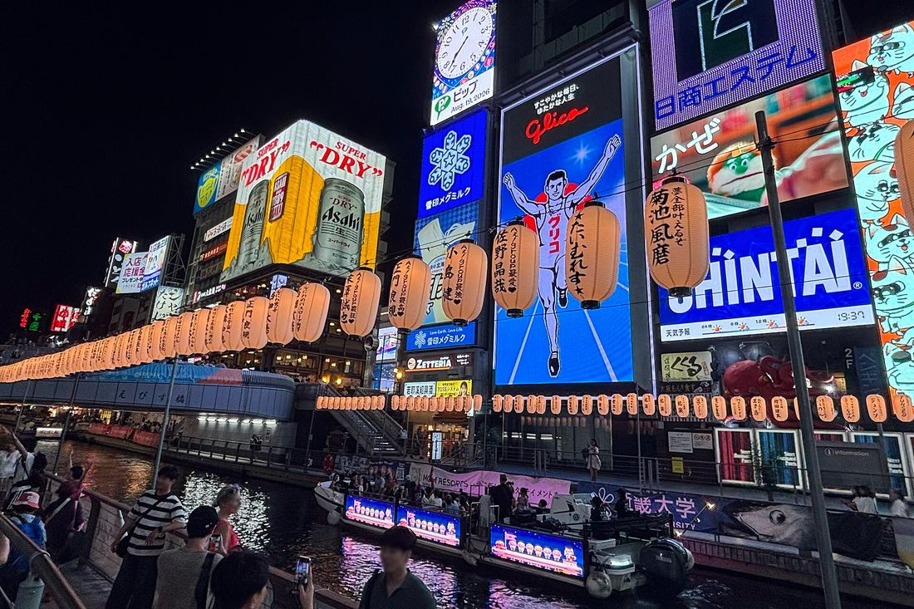

From the world’s busiest crossing to its quietest gardens
We begin in Tokyo, where centuries-old shrines sit between glass towers. The Shinkansen then carries us west to Kyoto, the old imperial capital of temples, moss gardens and lantern-lit lanes. We finish in Osaka, the city Japan itself calls its kitchen.
Everything between the first hotel and the last farewell is arranged for you: tickets, timings, tables and the people who make each place come alive.
- Culture & history 5/5
- Food & drink 5/5
- City life 4/5
- Nature 2/5
- Pace Moderate
- Walking Daily, on foot






The route
A sample plan to show the format. Days, stops and what each day includes will come from One Universe’s real itinerary.
Day 01Welcome to Tokyo
Night in Tokyo
Arrival at Haneda and transfer to the hotel. In the evening, a welcome dinner with the group and your guide.
Included TBD
Day 02Old Tokyo: Asakusa, Ueno and Yanaka
Night in Tokyo
Senso-ji at the quiet hour before the crowds, the craft shops of Nakamise and an afternoon in the lanes of Yanaka, one of the few districts to keep its pre-war streets.
Included TBD
Day 03New Tokyo: Meiji Jingu, Harajuku and Shibuya
Night in Tokyo
The forest shrine of Meiji Jingu, the boutiques of Omotesando and the Shibuya crossing at dusk, seen from above.
Included TBD
Day 04By bullet train to Kyoto
Night in Kyoto
The Shinkansen to Kyoto, with Mount Fuji on the right on a clear day. Evening walk through Gion and Pontocho.
Included TBD
Day 05Fushimi Inari and the Golden Pavilion
Night in Kyoto
An early climb through the torii gates of Fushimi Inari, then Kinkaku-ji and the Zen rock garden of Ryoan-ji.
Included TBD
Day 06Arashiyama and a tea ceremony
Night in Kyoto
The bamboo grove of Arashiyama and Tenryu-ji in the morning; a private tea ceremony in the afternoon.
Included TBD
Day 07Nara on the way to Osaka
Night in Osaka
Todai-ji and its Great Buddha, and the deer of Nara Park. Arrival in Osaka in the late afternoon.
Included TBD
Day 08Osaka, Japan’s kitchen
Night in Osaka
Osaka Castle in the morning, Kuromon Market at lunch and a farewell dinner by the canal in Dotonbori.
Included TBD
Day 09Sayonara
Departure from Kansai
Breakfast and transfer to Kansai International Airport.
Included TBD
The itinerary may change because of weather, public holidays or other local conditions. Wording of this notice TBD
Taken care of, and what is up to you
The rows show what a journey like this usually covers. One Universe confirms each one.
Included
- Hotels (category, room type)TBD
- BreakfastTBD
- Other mealsTBD
- Shinkansen and transfersTBD
- Guide with the groupTBD
- Entrance feesTBD
- Travel insuranceTBD
Not included
- International flightsTBD
- Visa fees, if anyTBD
- Personal expensesTBD
- Optional experiencesTBD
Before you pack
Where we stay
Hotel names and category TBD
Getting around
Japan’s high-speed trains link the three cities: Tokyo to Kyoto takes about 2 hours 15 minutes, Kyoto to Osaka under 30 minutes. Transport within each city TBD
Your guide
Who travels with the group, and in which languages TBD
Luggage
Japan has reliable luggage forwarding between hotels, so suitcases can travel separately while you take the train. Whether it is included TBD
Single rooms
Availability and supplement TBD
Flights included? TBD
Departures
| Departure | Return | Price per person | Status |
|---|---|---|---|
| TBD | TBD | TBD | TBD |
| TBD | TBD | TBD | TBD |
| TBD | TBD | TBD | TBD |
Questions
About this journey
Where and when do we meet on day one?
TBD
How much walking is there?
TBD
How big is the group?
TBD
About One Universe
How do I book and pay?
TBD
Can I change or cancel?
TBD
Can I travel solo?
TBD
About Japan
Do I need a visa?
It depends on your passport. Many nationalities can visit Japan as tourists for up to 90 days without a visa, but the list changes. Check with the Embassy of Japan in your country before booking.
What is the time difference?
Japan Standard Time is UTC+9, with no daylight saving. That is 12 hours ahead of São Paulo and 8 or 9 hours ahead of central Europe.
What currency is used, and how do I pay?
The Japanese yen (JPY). Cards are accepted in hotels, department stores and most restaurants, but small shops and temples often take cash only. Convenience-store ATMs accept foreign cards. A prepaid transit card (Suica, PASMO or ICOCA) also pays for trains and many shops.
Should I tip?
No. Tipping is not part of Japanese culture and can cause confusion. Good service is included in the price.
Which plugs are used?
Type A and B (two flat pins), 100 V. Most phone and laptop chargers work; check hair dryers and other appliances.
Will I have internet?
Yes. An eSIM or a pocket Wi-Fi rented at the airport is the easiest option. Hotels and stations have free Wi-Fi.
When is the best time to go?
- Spring, late March to early April: cherry blossoms.
- Autumn, mid-November to early December: red maples in Kyoto.
- Summer is hot and humid; the rainy season runs from June to mid-July.
- Winter is cold and dry, with clear days and fewer visitors.
A few useful words
Konnichiwa: hello · Arigatō: thank you · Sumimasen: excuse me · Oishii: delicious